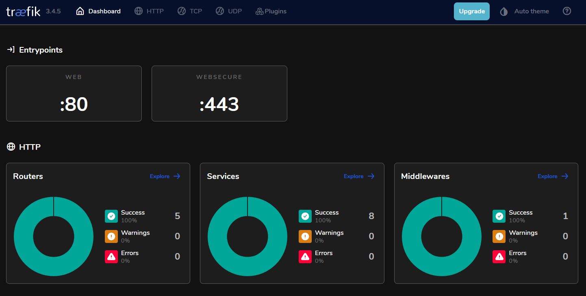

Projets

Traefik reverse proxy
Mise en place d'un reverse proxy avec Traefik pour gérer les requêtes HTTPS sur mon homelab.
Voir le projetÉtudiant en Administration Systèmes et Réseaux
Je m'appelle Louis, passionné et autodidacte dans le domaine de l'administration système. Actuellement, je prépare un BTS SIO (Services Informatiques au Organisations) au lycée Paul Louis Courrier.
Je consacre la majeure partie de mon temps libre à me tenir informé des nouvelles technologies et à pratiquer pour développer de nouvelles compétences. J'ai également transformé un ordinateur de bureau Z440 en serveur chez moi, sous VMware ESXi, où je gère différentes machines virtuelles sous Linux pour des services tels qu'OpenVPN, Docker, Nextcloud, Traefik et de l'hébergement web.
Systèmes d'exploitation
Virtualisation
Conteneurisation
Lycée Paul Louis Courier / Tours
2025 - 2027
BTS Services Informatiques aux Organisations
Lycée Henri Becquerel / Tours
2023 - 2025
BAC PRO Systèmes Numériques, option Réseaux Informatiques et Systèmes Communicants
Projet d'étudeJuillet 2025
ANSSI - Agence nationale de la sécurité des systèmes d'information
Voir le certificatHutchinson / Joué-lès-Tours
Stage - décembre 2024
Hutchinson / Joué-lès-Tours
Stage - juin 2024
APB MULTIMEDIA / Tours
Stage - février 2024
Mise en place d'un reverse proxy avec Traefik pour gérer les requêtes HTTPS sur mon homelab.
Voir le projet